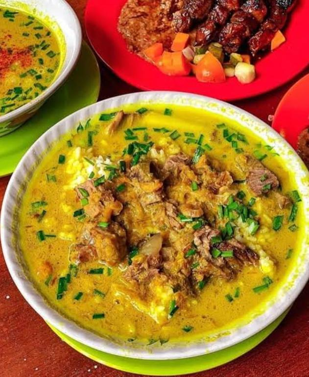
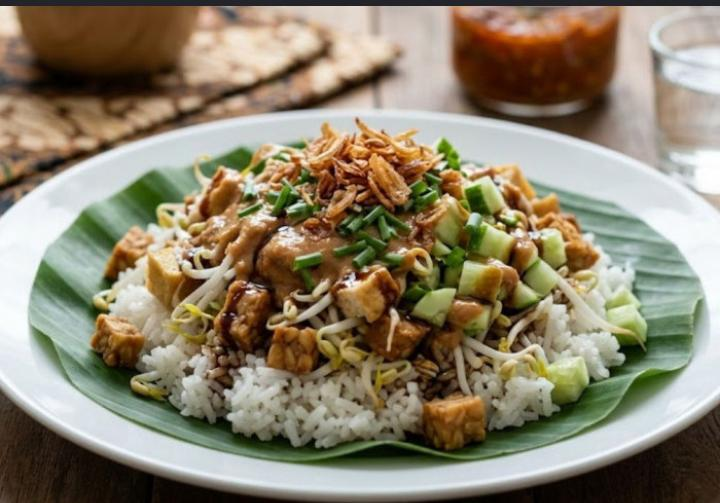
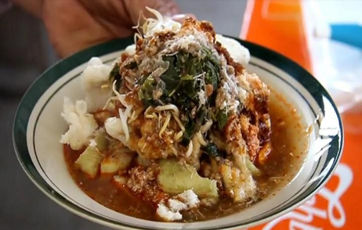
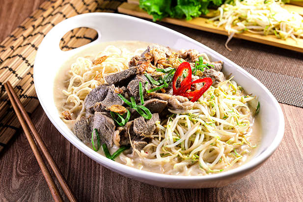

Katalog Kuliner Unggulan
Lihat semua
Ikon KotaEmpal Gentong
Kuliner legendaris Cirebon yang dimasak dalam gentong tanah liat besar menggunakan kayu bakar. Kuah santannya gurih kaya rempah dengan daging sapi empuk — disajikan hangat bersama nasi atau lontong.
 Favorit
Favorit
Nasi Jamblang
Berasal dari daerah Jamblang, dahulu dibagikan kepada pekerja di masa kolonial. Nasi dibungkus daun jati agar tetap segar, disajikan dengan puluhan pilihan lauk yang memancarkan aroma khas daun jati.

SehatNasi Lengko
Hidangan sederhana khas Cirebon berisi nasi dengan tahu, tempe, tauge, dan mentimun, disiram bumbu kacang dan kecap. Dominan bahan nabati dengan cita rasa gurih, manis, dan segar.

Docang
Kuliner tradisional khas sarapan Cirebon. Lontong disajikan dengan daun singkong, tauge, dan kelapa parut, lalu disiram kuah berbumbu panas dan dilengkapi kerupuk renyah.

Tahu Gejrot
Tahu goreng disiram bumbu cuka, gula merah, cabai, dan bawang. Perpaduan rasa manis, pedas, dan asam yang khas — cocok sebagai camilan kapan saja.

Mie Koclok
Perpaduan budaya Tionghoa dan Nusantara. Nama 'koclok' berasal dari cara mencelupkan mi ke air panas. Kuah putihnya lebih kental dari mi berkuah lainnya, dilengkapi ayam suwir, kol, tauge, dan telur.